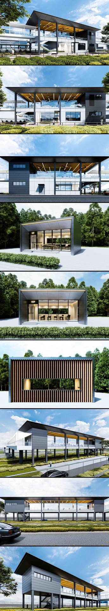
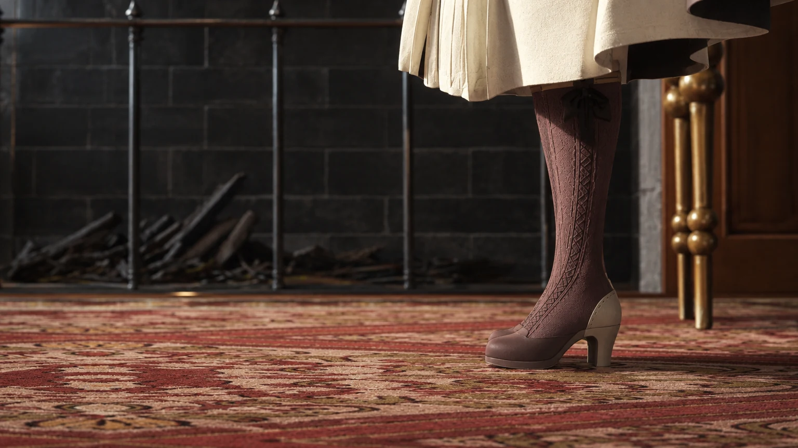

← 返回作品选集01 / 项目作品总览 02 / 光影氛围与材质对比
建筑可视化
赛车场看台与配套空间
参与赛车场看台及配套空间的方案协作，借助模型与效果图表达立面、体量及空间关系。
项目类型建筑可视化
个人职责方案建模 / 建筑表现
使用工具SketchUp / 3ds Max / D5
项目背景
团队建筑项目，参与赛车场看台及配套空间的方案建模与建筑表现。
我的工作
- 协助看台建筑及立面方案的设计表达。
- 搭建赛车场、看台与配套设施模型，制作渲染画面。
- 结合方案沟通需求调整模型与表现视角。
作品与过程
2 张图片 · 点击放大查看


基础阶段最终效果滑动对比展示从基础体量与漫反射材质，到最终夜景灯光氛围的制作演进过程。
职责与署名
团队项目；个人参与方案建模与建筑可视化，项目整体设计归原团队。